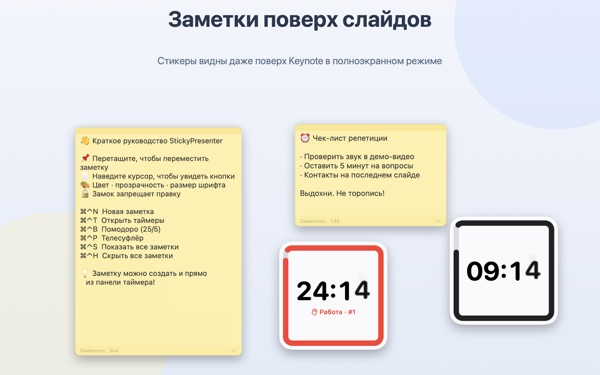
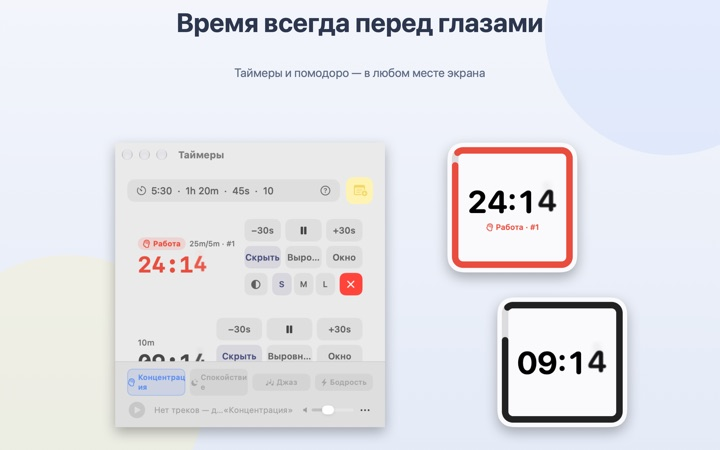
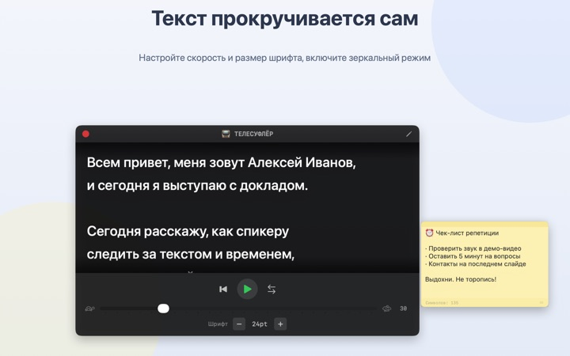
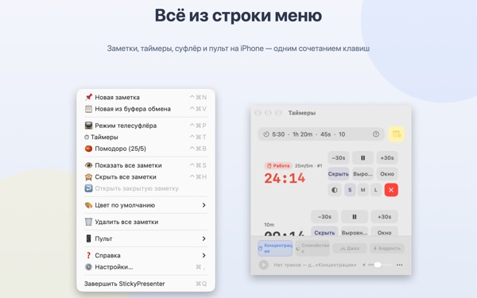

Текст и оставшееся время
прямо на слайде
Включите Keynote на весь экран, и заметки с таймером останутся поверх. Они не забирают фокус у приложения для презентаций, так что кликер по-прежнему листает слайды.
Все функции бесплатны. Нужна macOS 14 или новее.

Попробуйте на слайде
Введите время так же, как в приложении. Нажмите 15s и посмотрите, как виджет предупреждает, что время на исходе.
Куда деть текст и часы во время выступления?
Режим докладчика требует второй экран, а взгляд на наручные часы зал замечает всегда. Возможно, вы уже клеили бумажку на ноутбук, а она отваливалась. StickyPresenter закрепляет текст и оставшееся время прямо над слайдом, там, куда вы и так смотрите.
Один взгляд, и ясно, сколько осталось
Квадратный виджет в углу показывает оставшееся время. Ближе к концу он краснеет, а когда время выходит, звучит сигнал и мигает рамка.
Время можно вводить как удобно, например 5:30 или 1h 20m, а 25/5 запустит помидор, где работа и перерыв чередуются. Откройте таймер в отдельном окне, чтобы показывать при демонстрации экрана или через AirPlay только его.

Читайте текст, глядя в камеру
Телесуфлёр прокручивает текст с заданной скоростью и сам останавливается в конце. Скопируйте текст, нажмите ⌘⌃P, и он откроется уже с ним.
Есть зеркальный режим для суфлёров с полупрозрачным стеклом, а скорость и размер шрифта сохранятся до следующего раза.

Не отрываясь от слайда
Приложение тихо работает в строке меню: ни значка в Dock, ни окон, за которыми надо следить. Сочетания вроде ⌘⌃N для новой заметки и ⌘⌃T для таймеров срабатывают даже в полноэкранном Keynote.
На сцене бесплатное приложение для iPhone Remote Controller for Sticky позволяет запускать и останавливать таймер и убирать виджет, если он закрывает слайд.

Три шага, чтобы начать
- 1
Откройте приложение
В строке меню появится значок заметки, а при первом запуске откроется короткое руководство.
- 2
Добавьте заметку и таймер
Скопируйте текст и нажмите
⌘⌃V, затем введите длительность выступления в поле таймера. - 3
Включите полный экран
Заметка и таймер останутся поверх.
Сочетания клавиш и форматы времени
- ⌘⌃N
- Новая заметка
- ⌘⌃V
- Новая заметка из буфера обмена
- ⌘⌃T
- Показать или скрыть таймеры
- ⌘⌃B
- Запустить помидор (25 мин работы, 5 мин перерыва)
- ⌘⌃P
- Телесуфлёр
- ⌘⌃S · ⌘⌃H
- Показать или скрыть все заметки
- 10
- Просто число означает минуты (10 мин)
- 5:30 · 1:15:00
- Минуты:секунды, часы:минуты:секунды
- 1h 20m · 45s
- С единицами
- 25/5
- Работа/перерыв по кругу, пока не остановите
Все сочетания используют Command (⌘) и Control (⌃) вместе и работают, даже когда вы в другом приложении. Таймер можно поставить до 99:59:59.
Частые вопросы
Это правда бесплатно?
Да. Все функции бесплатны, а приложение для iPhone Remote Controller for Sticky тоже бесплатное и ставится отдельно. Если оно помогает, в настройках можно оставить разработчику чаевые; они ничего не открывают.
Можно показать только таймер при демонстрации или повторе экрана?
Да. Кнопка «Окно» в строке таймера открывает его обычным окном. Тогда оно появится в списке окон для демонстрации экрана и AirPlay, и можно показать только его.
Я скрыл виджет таймера и не могу его найти.
В окне таймеров наведите указатель на строку этого таймера, и место виджета обведётся пунктиром. Кнопка «Выровнять» вернёт его к окну таймеров.
Я случайно закрыл заметку.
Через «Открыть закрытую заметку» в строке меню можно вернуть любую из последних 20. Заметки сохраняются по мере ввода и после перезапуска приложения возвращаются на прежнее место.
Сочетание клавиш не срабатывает.
Если в таблице сочетаний в руководстве оно помечено как «Занято другим приложением», его раньше заняло другое приложение. Закройте его, и сочетание снова заработает. Разрешение универсального доступа не нужно.
Почему тема «Хамелеон» просит доступ к записи экрана?
«Хамелеон» считывает цвет экрана за виджетом и подстраивается под него, для этого и нужен доступ. Ничего не сохраняется и не отправляется. Без него темы «Системная», «Светлая» и «Тёмная» работают как обычно.
Как добавить фоновую музыку?
Выберите настроение («Концентрация», «Спокойствие», «Джаз» или «Бодрость») на музыкальной панели внизу окна таймеров, и приложение создаст по папке для каждого. Положите туда свои треки, и они будут играть по порядку вместе с таймером. Музыки в приложении нет.
Пульт на iPhone не находит мой Mac.
Проверьте по порядку: запущен ли StickyPresenter на Mac (значок в строке меню); подключены ли оба устройства к одной сети Wi‑Fi, а не к гостевой или мобильной; разрешена ли «Локальная сеть» для приложения в разделе «Конфиденциальность и безопасность» и на iPhone, и на Mac; выключен ли VPN.
Пульт пишет, что код сопряжения неверный.
Введите четырёхзначный код, который сейчас показан в меню «Пульт» в строке меню Mac. Если вы нажимали «Новый код сопряжения», подходит только новый. После первого сопряжения пульт подключается сразу при открытии.
Может ли кто-то другой управлять моим таймером?
Без вашего кода нет. Mac принимает только пульты, которые ввели правильный код, и общается с ними по зашифрованному прямому соединению в локальной сети. Если код кто-то видел, выберите «Новый код сопряжения» или «Забыть сопряжённые пульты» в меню «Пульт».
Где хранятся мои заметки и тексты?
Только на этом Mac. Нет ни аккаунта, ни рекламы, и в интернет ничего не уходит, кроме анонимной статистики использования и отзывов, которые вы отправите сами.
Вопросы, ошибки или идеи? Пишите на mizzking75@gmail.com.